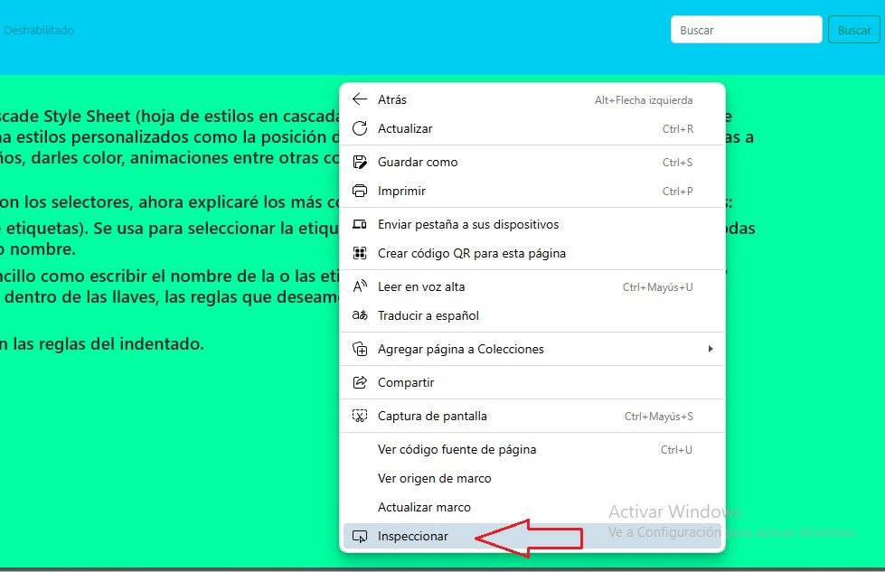

Consola de desarrollo.
Haciendo clic derecho en cualquier área de la pantalla podemos seleccionar del menú la opción "inspeccionar" y con esto se abrirá una especie de representación del front-end de nuestro pryecto en un panel lateral. Por defecto aparece el documento HTML, ustedes buscarán en la barra superior el icono o la palabra "consola".

pueden probar la consola decarando algunas variables y haciendo operaciones sencillas Primero ubicamos el botón para limpiar la pantalla y poder trabajar en orden.
con todo esto claro, podemos continuar. Generalmente, nuestro código de javaScript (igual que la mayoria de los lenguajes) se arma en bloques, y cada bloque es una funcionalidad encerrada en llaves. {bloque}
veremos ahora el condicional "if". En Raptor usamos el símbolo "selection", en javaScript usaremos la palabra reservada "if" seguida de paréntesis () y luego llaves{}. Detro de los paréntesis irá la condicióny dentro de las llaves irá el programa que se va a ejecutar.
if( condición ){ programa }
el símbbolo "selection" tiene dos ramas, "yes" y "no". El condicional "if" de javaScript también, sólo que la rama "yes" vendría a ser el programa que se ejecuta dentro del primer bloque, y para la rama "no" hay que construir un segundo bloque con la palabra reservada "else"
if( condición ){ programa si la condición se cumple }else{ programa si la condición no se cumple }
Hay incluso una forma de incluir condiciones alternativas, dándole a nuestro condicional funcionalidades más precisas. Usando la palabra reservada "else if"
if( condición ){ programa si la condición se cumple }else if( condición alternativa ){ programa si la condición alternativa se cumple }else{ programa si ninguna condición se cumple }